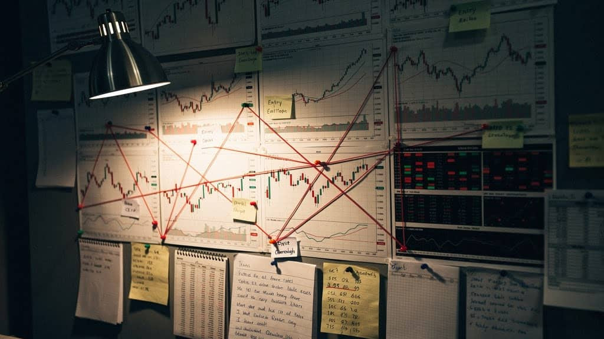

I won't beat around the bush…I know you're eager to get back into the swing of things after the long weekend.
LEARNING FROM LOSSES

Tonight is webinar night, and we're on Episode 7 of the Traders Operating System.
This time we're talking:
Failure Analysis and how to actually read your losses correctly.
And no, that's not “learn from your mistakes” ra ra… we're going tactical.
We'll cover:
- The different types of losing trades, and what they actually signal (because not every loss means the same thing)
- Execution failure vs structural failure: A framework for diagnosing what really went wrong
- How to read loss clusters without panicking or abandoning a working edge
- When losses are normal… and when they're warning you something has changed
Cos we're all guilty of either ignoring losses or overreacting to them at some point…😬
As always, we'll start at 7 pm UK, start with a bit of market analysis if we get some action, and of course, I'll answer every question in our live Q&A session at the end.
See you later, keep it managed…
Episode 7: Failure Analysis - Reading Losses Correctly
Not all losses are equal. This session teaches how to interpret losses accurately and avoid false conclusions.